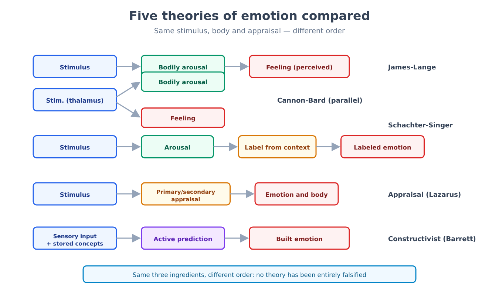
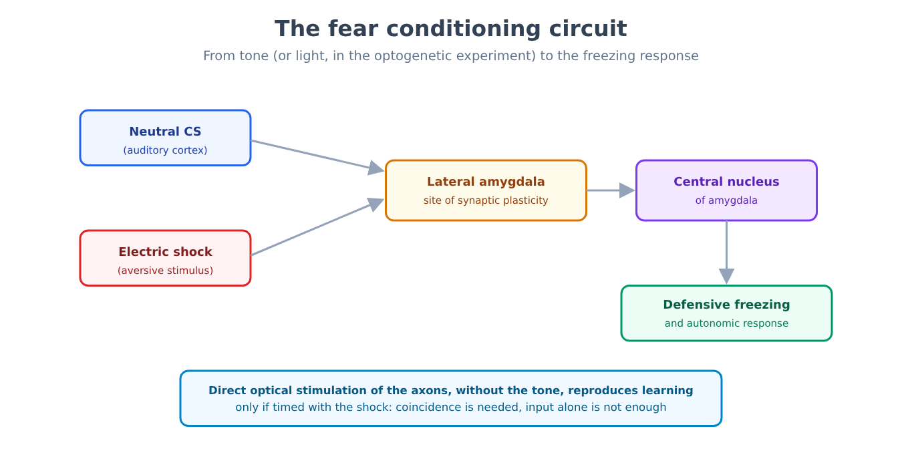
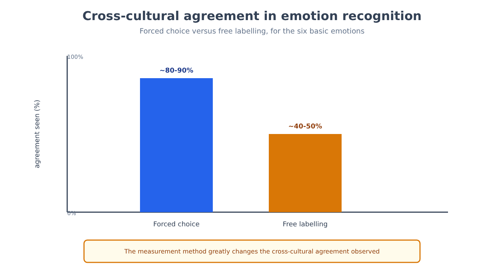
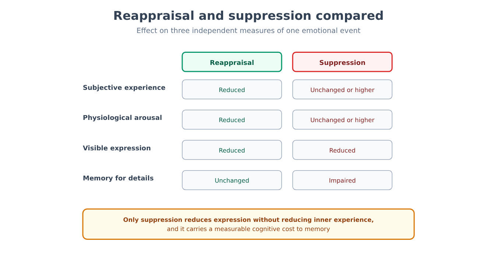
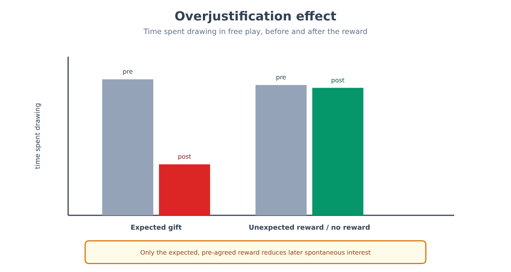
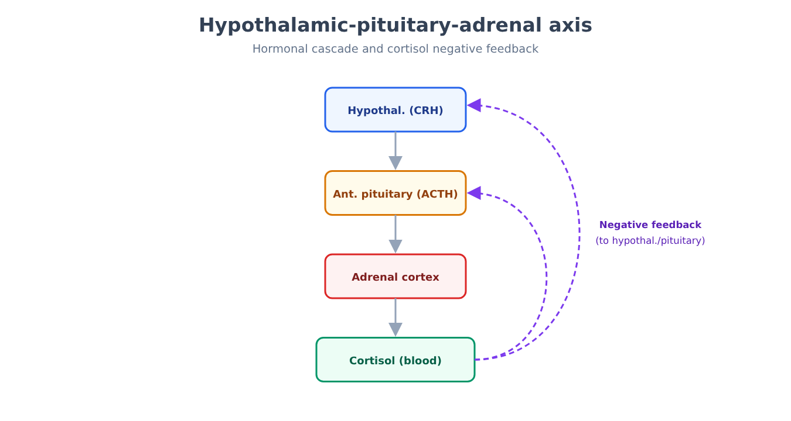
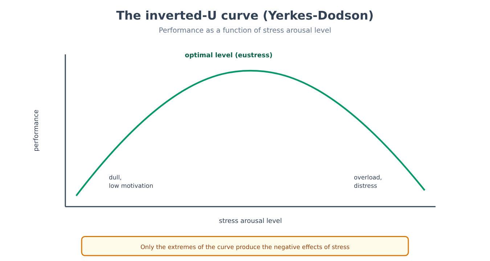

Part VIII. Emotion and motivation
Chapter 48 — What is an emotion
[IN A NUTSHELL]
What exactly happens when we feel fear or joy? The most intuitive answer — first comes the feeling, then the body reacts — has been overturned, complicated, and finally rebuilt several times over in the history of psychology. This chapter sets out the main competing theories, which still have no clear winner, and explains why even measuring an emotion with a simple questionnaire can alter what is being measured.
A different order for the same three ingredients
Every theory of emotion works with the same three elements — a stimulus in its context, a bodily state, a cognitive appraisal — and the theories differ mainly in the order in which they arrange them, not in the list of ingredients.
The peripheral theory (often associated with the names of William James and Carl Lange) proposes the most counterintuitive order: a stimulus first triggers automatic physiological arousal (a faster heartbeat, sweating, muscle tension), and the subjective emotion is nothing more than the perception of that bodily arousal. We do not tremble because we are afraid; we are afraid because we tremble. The theory presupposes autonomic specificity: each emotion should have its own distinct physiological signature (fear: faster heartbeat, raised blood pressure, sweating; sadness: slower heartbeat, slow breathing).
An early objection, known as the Cannon-Bard critique, pointed out, mainly on the basis of animal experiments in which the viscera were disconnected from the brain, that emotional behavior remained intact (in humans, studies of spinal cord injury have produced conflicting results: reduced emotions in the early work, preserved emotions in later studies), and that visceral changes are too slow and too undifferentiated to account for the speed and variety of the emotions people feel. The alternative model it proposed — a stimulus, followed by parallel and simultaneous processing of physiological arousal and conscious feeling, both triggered by the thalamus — avoided the problem of slowness, but left open the question of how the same generic physiological arousal can be experienced as completely different emotions.
Arousal alone is not enough: it needs a label
[THE EXPERIMENTAL DESIGN]
In the experiment by Stanley Schachter and Jerome Singer (1962), participants are injected with epinephrine (a hormone that produces physiological arousal: a racing heart, tremor, sweating), presented to them as a vitamin, and are divided into two groups: one group is told honestly which physical symptoms to expect from the injection, the other is not. Each participant then waits in a room with a confederate of the experimenter who behaves, depending on the condition, either euphorically (playing with objects, throwing paper airplanes) or angrily (complaining about a questionnaire, tearing it up). Participants who were correctly informed about the physical symptoms attribute their arousal to the injection and report only a mild emotion, regardless of the confederate's behavior. Uninformed participants, lacking a ready-made explanation for their arousal, tend to adopt the emotional label suggested by the social context: euphoria in the presence of the euphoric confederate, anger in the presence of the angry one — exactly the same physiological arousal, labeled in opposite ways depending on the context.
This result underlies the two-factor theory: physiological arousal supplies the intensity of the emotion, but it is the cognitive appraisal of the context that supplies its qualitative label — exactly the same arousal can be experienced as joy, anger, fear, or excitement, depending on what the person believes caused it.
Appraising one's relationship with the environment
Appraisal theories (associated above all with the names of Magda Arnold and Richard Lazarus) shift the emphasis from simply labeling an arousal that is already present to an evaluative judgment that precedes and generates the emotion itself: an event is evaluated in terms of its relevance to personal goals (a primary appraisal, which establishes whether the event is positive, negative, or irrelevant) and in terms of one's ability to cope with it (a secondary appraisal, which considers the available control, expectations, and the attribution of responsibility). The same news of being laid off can generate anger, relief, or fear depending on how it is appraised along these two axes — a decisive element that purely physiological models cannot explain on their own.
The brain constructs emotion, it does not record it
Constructionist theories (associated above all with the recent work of Lisa Feldman Barrett) take the appraisal perspective one step further: they propose that the brain does not passively recognize an emotion already present in the body or in the world, but actively constructs it by combining the sensory information of the moment with concepts and memories already stored, in a process of continuous prediction rather than simple recording. The same event — for example, a funeral with live music and dancing — can generate celebration or pure mourning depending on the cultural concepts available to the person experiencing it, not because of any difference in the event itself.

None of these five families of theories has been falsified in its entirety; each captures a real aspect of the phenomenon (partial physiological specificity, the role of cognitive labeling, the centrality of appraisal, the active construction of meaning), and the most widespread contemporary synthesis combines elements of appraisal and construction, without denying a role, albeit a less rigid one than expected, to bodily specificity.
Even measuring an emotion can alter it
Chapter 1 introduced the general principle of measurement reactivity: the very act of observing or measuring a mental state can alter it (1 → 48). Emotions offer a particularly direct case of this principle: a mood questionnaire that explicitly asks "how sad do you feel right now, from 1 to 10" does not merely record a preexisting state, but can lead the person to reflect on and cognitively elaborate an emotion that, without that question, would have remained diffuse and unlabeled — a process not far removed, in its underlying mechanics, from the cognitive labeling described by the two-factor theory. The practical consequence for research is that the measurement method (an explicit questionnaire vs. an indirect physiological measure vs. behavioral observation) is never neutral with respect to the phenomenon being measured, and the results of studies on emotion that use different methods should be compared with this caution in mind.
[KEY POINT OF THE CHAPTER]
• The main theories of emotion (peripheral, Cannon-Bard, two-factor, appraisal, constructionist) share the same three ingredients — stimulus, body, cognitive appraisal — and differ above all in the order in which they arrange them.
• The Schachter and Singer experiment indicates that the same physiological arousal can be labeled as opposite emotions depending on the available social context; it is a much-cited result, but weak in the original data and not clearly replicated, so the two-factor theory is today considered only partly supported.
• Constructionist theories propose that the brain actively constructs emotion by combining sensory input and stored concepts, rather than simply recording it.
• The principle of measurement reactivity, introduced in chapter 1, applies directly to mood questionnaires: the question itself can alter the state it is meant to measure.
Chapter 49 — The fear circuit
[IN A NUTSHELL]
A rat can learn to fear a sound after only a few pairings with an electric shock, and this learning has been traced to a precise neural circuit. This chapter sets out the experimental design behind this learning and, above all, exactly how much these results entitle us to say — and not to say — about the subjective experience of fear.
Fear conditioning: an applied case of chapter 15
Chapter 15 introduced classical conditioning and its reinterpretation in terms of prediction error (15 → 49). Fear conditioning is a particularly well-studied application of it: a neutral stimulus (a tone) is repeatedly paired with an aversive stimulus (a mild electric shock to the paw, in animal models), until the tone alone, presented without the shock, elicits a conditioned fear response — in rodents, typically freezing, a state of active behavioral inhibition (not a simple passive shutdown) that reduces the likelihood of being detected by a predator and allows defensive planning.
[THE EXPERIMENTAL DESIGN]
In the experiment by Jeong-Tae Kwon and colleagues (2014), the researchers expressed a light-sensitive ion channel (channelrhodopsin-2) in the axons that carry auditory information to the lateral amygdala (coming from the thalamus and the auditory cortex), and replaced the tone with direct optical stimulation of those axons: six pairings of a flash of blue light with an electric shock, in context A. Twenty-four hours later, in a context B never associated with the shock, the light alone (without shock) elicited freezing, showing that learning had taken place. Two control groups — light never paired with the shock, or light and shock presented but separated in time — showed no learning at all. Since the only possible auditory event was the direct stimulation of the axons, and only the group with temporal pairing learned, stimulation of those inputs is enough to serve as a conditioned stimulus, and blocking transmission in the lateral amygdala during training prevents learning. The data are compatible with plasticity at the synapses between those inputs and the lateral amygdala; direct proof that plasticity at those synapses is sufficient requires further experiments. Stimulation of the input alone is not enough: it must coincide with the aversive event.

The amygdala emerges from this and numerous other experiments as the key structure for forming predictive associations between neutral stimuli and emotionally relevant events — an associative learning function that distinguishes the amygdala from structures such as the hypothalamus, which generate responses that are more reflexive and less modifiable by experience.
What these results do not demonstrate
[CONTROVERSIAL QUESTION]
Fear conditioning in rodents is one of the most robust and replicated experimental paradigms in all of behavioral neuroscience, but it remains the subject of a serious internal debate about its interpretation: what does it entitle us to say about the subjective, conscious experience of fear? One position, historically dominant, treated the "fear circuit" (the amygdala and connected structures) as the direct substrate of the conscious feeling of fear as well, not only of the defensive behavioral and physiological response. The neuroscientist who did most to isolate this circuit, Joseph LeDoux, later proposed a more cautious distinction: the defensive survival circuits (which generate freezing, flight, attack, and the physiological correlates of threat) are well characterized and shared with other species, but the conscious feeling of fear would require the activation of broader cortical processes, linked to explicit awareness, that are not necessarily identical to, or reducible to, the activation of the amygdala alone. A clinical case relevant to this debate is that of patients with bilateral calcification of the amygdala (due to a rare genetic disease): these patients neither recognize nor feel fear when faced with snakes, spiders, or haunted houses, yet they experienced a full panic attack when exposed to a high concentration of inhaled carbon dioxide — a sign that the system that generates alarm at a visible external threat (mediated by the amygdala) is distinct from the system that generates alarm at an internal, chemosensory threat, which appears to be routed elsewhere. The conclusion shared by both positions is that the amygdala is not "the fear center" in a simple, single sense: it is a necessary component for a specific class of learned external threats, not the only possible substrate of the subjective feeling as a whole.
[KEY POINT OF THE CHAPTER]
• Fear conditioning applies to the emotional domain the prediction-error model already encountered in general classical conditioning (chapter 15).
• Experiments directly manipulating the neural circuit (optical stimulation of the axons projecting to the lateral amygdala) have shown that activating specific inputs to the lateral amygdala, paired with the shock, is enough to produce fear learning, in a way compatible with synaptic plasticity at that site.
• The amygdala is necessary for learning to associate neutral stimuli with external threats, but data from patients with bilateral amygdala damage show that it is not the only possible substrate of fear in general: an internal threat (inhaled carbon dioxide) produced panic in them despite their lack of fear toward visible external threats.
• The debate over the relationship between defensive survival circuits (observable, measurable, shared with other species) and the conscious feeling of fear remains open and calls for caution in equating the two levels.
Chapter 50 — Expression and recognition
[IN A NUTSHELL]
The idea that certain facial expressions of emotion are universal, recognized in the same way in every culture in the world, has become common sense to the point of seeming obvious. This chapter sets out the classic cross-cultural studies that supported this idea, and the more recent methodological critiques that have scaled back its reach.
The basic emotions hypothesis
The basic emotions hypothesis, developed above all in the work of Paul Ekman beginning in the 1960s, proposes that a small set of emotions (typically anger, fear, surprise, sadness, disgust, and happiness) have specific, universal facial expressions of innate rather than culturally learned origin — a product of evolution shared by the entire human species, regardless of exposure to different cultures.
[THE EXPERIMENTAL DESIGN]
In the most cited study supporting this hypothesis, Ekman and his collaborators showed photographs of faces expressing the six basic emotions to members of the Fore people of New Guinea, a group with minimal or no contact with Western culture before the study. Participants were read a short emotional story and asked to choose, from two or three photographs provided by the experimenter (a so-called forced-choice task), the face that best matched it. The level of agreement between the Fore participants and the answers expected by the Western researchers turned out to be remarkably high for most of the six emotions (with the exception of fear, often confused with surprise), and was interpreted as direct evidence of the universality and innateness of these expressions.
The forced-choice method hides part of the problem
[COMMON BELIEF]
A widespread idea, often presented as a fact established beyond any doubt, is that the facial expressions of the six basic emotions are recognized in the same way, automatically and unambiguously, in every culture on the planet. The data collected with the forced-choice method are compatible with this idea, but a serious methodological limitation complicates their interpretation: when participants are given a short list of labels to choose from, the observed agreement may partly reflect the task's own ability to narrow down the plausible options, not necessarily a spontaneous and unambiguous recognition. More recent studies that replaced forced choice with free-labeling tasks (asking participants to describe the expression in their own words, without a predefined list) or with measures of perceived similarity between expressions have found systematically lower levels of cross-cultural agreement, and patterns of emotion categorization that are less uniform across cultures than the forced-choice method suggested.
Partial universality, not total uniformity
[CONTROVERSIAL QUESTION]
The disagreement among researchers on this topic is not about whether there is some shared biological basis for emotional expression — on that there is broad consensus — but about how accurately Ekman's six discrete categories represent the actual structure of that biological basis. One position, which essentially defends the original framework, stresses that above-chance cross-cultural agreement, however scaled back by the measurement method, remains a solid finding replicated with different methods, and that facial expressions remain among the social signals most quickly and consistently interpreted across cultures compared with almost any other behavioral domain studied. A more critical position, developed above all in the work of researchers such as Lisa Feldman Barrett, Maria Gendron, and Carlos Crivelli, argues that the degree of cultural variation found with less constraining methods is too large to be dismissed as statistical noise, and that the very notion of discrete, universal emotional expressions automatically read by an innate "decoder" is an excessive extrapolation from the available data — the constructionist position on emotion (chapter 48) applied to the domain of facial recognition. Both positions agree on a core of above-chance cross-cultural similarity; the disagreement concerns how large that core is and how rigidly it is organized into discrete, universal categories.

[KEY POINT OF THE CHAPTER]
• The basic emotions hypothesis proposes a small set of universal and innate facial expressions, supported by Ekman's classic cross-cultural studies of the Fore people of New Guinea.
• The forced-choice method used in those classic studies can inflate the observed cross-cultural agreement by artificially narrowing the available response options.
• More recent studies using free labeling find real cross-cultural agreement, but systematically lower and less uniform than the classic method suggested.
• The current debate is not about the existence of a shared biological basis for emotional expression, but about how rigidly it is organized into the six discrete, universal categories proposed by the original hypothesis.
Chapter 51 — Emotion regulation
[IN A NUTSHELL]
Not all strategies for managing an unwanted emotion work in the same way, or at the same cost. This chapter sets out the experimental comparison between two of the most studied strategies, and explains why the construct of emotional intelligence — enormously popular outside academic psychology — measures, in research practice, much less than is commonly attributed to it.
Reappraise or suppress: two strategies, two different costs
Among the best-studied strategies of emotion regulation, two recur with particular frequency in experimental research: cognitive reappraisal, which consists of reinterpreting the meaning of an emotionally charged situation before or as it arises (for example, interpreting a difficult exam as a stimulating challenge rather than as a threat), and expressive suppression, which consists of inhibiting the outward signs of an emotion already under way, without changing its underlying interpretation (keeping a neutral expression while feeling the emotion intensely).
[THE EXPERIMENTAL DESIGN]
In a series of laboratory studies, participants are shown films with negative emotional content (for example, explicit surgical scenes) and are randomly assigned to a reappraisal condition (instructed to reinterpret the scene in a detached way, for example as a cinematic reenactment), a suppression condition (instructed not to show any visible emotion), or a control condition with no specific instructions. Researchers simultaneously measure the reported subjective emotional experience, physiological arousal (for example, skin conductance), and, in some designs, memory performance for the details of the scene. In the classic design (Gross, 1998, with a surgical film), reappraisal reduces negative subjective experience and expression without increasing physiological arousal (other studies also find physiological reductions, so the picture is mixed). Suppression reduces the visible expression of the emotion but not the subjective experience, can increase sympathetic arousal, and also carries a measurable cognitive cost: poorer memory for the details of the event, consistent with the idea that suppressing requires attentional resources continuously engaged in monitoring one's own expression.

A further cost of suppression, documented in studies of real social interactions rather than only in the laboratory, concerns the interpersonal level: people interacting with someone who is suppressing their emotion tend to perceive the interaction as less authentic and more effortful, an effect not observed to the same extent with reappraisal.
A construct overloaded with expectations
Emotional intelligence, in its original academic formulation (the model of Peter Salovey and John Mayer), defines a relatively circumscribed ability: accurately perceiving one's own and others' emotions, understanding them, and using them to facilitate thinking and decision-making. Measured with performance tests (in which there are objectively more or less correct answers, not just a self-assessment), this ability shows modest but real correlations with some life outcomes, distinct both from general intelligence and from personality traits.
[COMMON BELIEF]
In popular writing, especially since its spread through the media in the 1990s, the construct of emotional intelligence has often been presented as a more powerful predictor of success in life — professional, relational, personal — than the traditional intelligence quotient. This claim goes considerably beyond what research on the construct, in its version measured with performance tests, has actually established: the correlations found between emotional intelligence and life outcomes, once statistically controlled for general intelligence and for already known personality traits (in particular conscientiousness and emotional stability), are generally modest, not of the magnitude suggested by popular writing. An additional methodological problem concerns self-report questionnaires of emotional intelligence (as distinct from performance tests), widely used in organizational settings and in personnel selection: these instruments largely measure a person's perception of their own emotional abilities, not necessarily the ability itself, and overlap substantially with existing personality measures, raising doubts about their incremental validity, that is, about their ability to predict anything that established personality tests do not already predict.
This pattern — a psychological construct with a real but circumscribed core of validity, followed by a popular expansion that attributes to it far broader explanatory power than the data support — directly recalls a pattern already encountered with regard to the unconscious (51 → 31): in that case too, a construct with solid empirical foundations in a narrow domain (the nonconscious processes described in chapter 31) was extended, in popular culture, well beyond what research supports, to the point of becoming a universal explanation for almost every human behavior. Emotional intelligence is not an empty construct — its version measured with performance tests has real and circumscribed validity — but its popular use has systematically inflated its explanatory reach.
[KEY POINT OF THE CHAPTER]
• Cognitive reappraisal reduces the negative subjective experience and the expression of an emotion, with less certain physiological effects and no memory costs in the classic designs; expressive suppression reduces only the visible expression, leaving the internal experience unchanged or increased, with a measurable cognitive and social cost.
• Emotional intelligence, in its academic version measured with performance tests, has real but modest validity once general intelligence and personality are controlled for.
• The popular version of the construct has systematically inflated its predictive reach, a pattern of popular expansion beyond the data already encountered with regard to nonconscious processes in chapter 31.
• Self-report questionnaires of emotional intelligence, as distinct from performance tests, raise specific doubts about their incremental validity relative to existing personality measures.
Chapter 52 — Motivation
[IN A NUTSHELL]
Why do we act? Some drives to action stem from physiological imbalances that need correcting, others from a learning signal tied to reward, and still others seem to arise from the activity itself, independently of any external reward. This chapter sets out these three registers of motivation, and how a classic effect concerning willpower did not survive a large-scale test.
Motivation as an effector of homeostasis
Hunger, thirst, and discomfort in the cold are not mere incidental sensations (the sleep pressure of chapter 26 is a related case): they are behavioral effectors of homeostatic systems, engineered by evolution to push the organism to correct on its own a deviation from its internal equilibrium (glucose level, water balance, body temperature). This first register of motivation — let us call it homeostatic motivation — shares with the other physiological regulatory systems the same structure of sensor, control center, and effector, applied here to a voluntary behavioral effector rather than only an autonomic or neuroendocrine one.
Reward as a learning signal, not just pleasure
A second register concerns reward-related motivation, and here chapter 15 had already introduced, in connection with classical conditioning, the prediction-error model (15 → 52): learning proceeds not from the simple co-occurrence of events, but from the discrepancy between what happens and what was expected. Chapters 15 and 22, in dealing with conditioning and the neurochemistry of reward, had shown how this same mathematical principle, developed for behavioral conditioning without any reference to the brain, found a direct counterpart in the activity of dopaminergic neurons, which signal precisely the error between expected and received reward, not the reward itself (22 → 52).
[FORMULA]
A more general version of this principle, developed in computational reinforcement learning, extends prediction error to chains of events spread out in time, not just to a single stimulus-consequence pairing:
δ_t = r_t + γ · V(s_{t+1}) − V(s_t)
Where:
• δ_t is the prediction error at time t (the signal that, in the brain, corresponds to the phasic activity of dopaminergic neurons).
• r_t is the reward actually received at time t.
• V(s_t) is the estimated value of the state one is in at time t, that is, how much future reward is expected starting from that state.
• V(s_{t+1}) is the estimated value of the next state.
• γ (gamma) is a discount factor between 0 and 1 that reduces the weight of future rewards relative to immediate ones.
Worked example. Consider a monkey learning that a light (state s_t, estimated value V(s_t)=0.2) reliably precedes a fruit juice reward (r_t=1) with no further relevant intermediate states (V(s_{t+1})=0), with γ=0.9. At the moment of the reward: δ_t = 1 + 0.9·0 − 0.2 = 0.8. The positive signal, high relative to a reward of 1, reflects that the reward was much greater than the estimated value of the state predicted: the animal still has much to learn. With repeated learning, V(s_t) gradually approaches 1 and δ_t approaches zero: the reward becomes fully predicted, and — as shown by the recordings of dopaminergic neurons in chapter 15 — the dopaminergic signal at the reward itself disappears, shifting instead to the predictive stimulus (the light) at the moment it first appears.
Doing something for its own sake, not for the payoff
A third register concerns the distinction between intrinsic motivation, engaging in an activity for the satisfaction that comes from the activity itself, and extrinsic motivation, engagement driven by an external consequence separate from the activity (payment, a grade, praise). A counterintuitive result, documented repeatedly, is that introducing an external reward for an activity that is already intrinsically enjoyable can, under certain conditions, reduce the original intrinsic motivation instead of adding to it.
[THE EXPERIMENTAL DESIGN]
In the classic study by Mark Lepper, David Greene, and Richard Nisbett (1973), children who already showed a spontaneous interest in drawing are divided into three groups: one group is promised a reward (a decorative certificate) for drawing, before starting the activity; a second group receives the same reward but without it having been promised in advance (a surprise, after drawing); a third group receives no reward. In the following weeks, observed in a free-play setting with no expectation of reward, the children in the expected-reward group spend significantly less spontaneous time drawing than the other two groups, whose levels of interest remain essentially unchanged from the baseline measure. The proposed interpretation is that the expected and explicitly contracted reward shifts the causal attribution of one's own behavior from intrinsic interest in the activity to the external reward — an effect called the overjustification effect: the activity, once an end in itself, is recategorized as a means of obtaining something else, and loses part of its intrinsic value once that something else is no longer guaranteed.

The effect is not universal: unexpected rewards, rewards explicitly tied to the quality of performance rather than to mere participation, and activities with very low initial intrinsic interest show different or absent patterns — a point that has fueled an internal debate about the real practical reach of the effect outside the laboratory, for example in the design of incentive systems at school or at work.
A classic effect that did not survive a large-scale test
[DOES IT STILL HOLD?]
For decades, an influential model described self-control as a limited resource that is depleted with use, like a muscle that tires — the phenomenon called ego depletion: after exercising self-control in one task (for example, resisting the temptation to eat a sweet), people would perform worse on a subsequent, unrelated task that also requires self-control. The model generated hundreds of studies and considerable popularity, including outside academia, as an explanation for everyday phenomena (decision fatigue, evening lapses in dieting). A large-scale replication attempt, led by Martin Hagger, Nikos Chatzisarantis, and colleagues (2016), with twenty-three independent laboratories around the world following a protocol agreed in advance and preregistered, with over two thousand participants in total, found an average effect close to zero, in sharp contrast with the medium-to-large effect estimates reported by meta-analyses of the original literature. The model in its original form no longer holds up under this large-scale test: the discrepancy between the original meta-analyses (based on smaller and more heterogeneous laboratory studies) and the preregistered replication is today attributed mainly, according to bias-correction analyses, to selective publication and to an operational definition of depletion that varied too much from one study to the next; the model's original proponents contested the replication protocol, but a subsequent multisite test likewise yielded an effect close to zero. The possibility remains open that a more limited or better specified version of the phenomenon exists under specific conditions, but the general and widely popularized form of the model — self-control as a single resource that is depleted uniformly and transferably across very different tasks — did not pass the large-scale test.
This third register of motivation — activity as an end in itself, its possible erosion by poorly calibrated external rewards, and the real (more modest than thought) limits of self-control as a depletable resource — also connects to a theme encountered in the psychoanalytic tradition: chapter 11 had described the repetition compulsion as a drive to repeat a behavior independently of any evident gain (11 → 52), a structural parallel, although of entirely different theoretical origin, to the idea that not all human action is guided by an explicit calculation of costs and benefits.
[KEY POINT OF THE CHAPTER]
• Homeostatic motivation, introduced here as a behavioral effector, shares the general structure of physiological regulation.
• The prediction-error model, encountered in classical conditioning (chapter 15) and in the neurochemistry of reward (chapter 22), extends to chains of events spread out in time, with a signal that corresponds to phasic dopaminergic activity.
• The overjustification effect shows that an expected external reward can reduce the original intrinsic motivation for an already enjoyable activity, by shifting the causal attribution of the behavior.
• The ego depletion model, in its classic and widely popularized form, did not survive a large-scale preregistered replication involving twenty-three independent laboratories, which found an average effect close to zero.
Chapter 53 — Stress
[IN A NUTSHELL]
Stress is not harmful in itself: in moderate doses it improves attention and memory, and it becomes a problem only when it is chronic or does not switch off properly. This chapter sets out the dual biological circuit of stress, its effects on memory and decision-making, and why the same people can sit at very different points on the same curve.
Two circuits, one common origin
The stress response is organized into two circuits that share an origin (the amygdala appraising a threat) but differ in speed: a fast neural circuit, which through the sympathetic nervous system reaches the target organs in milliseconds (faster heartbeat, pupil dilation, release of adrenaline from the adrenal medulla), and a slow endocrine axis, the hypothalamic-pituitary-adrenal axis (HPA axis), which takes a few minutes to reach full effect: the hypothalamus releases corticotropin-releasing hormone (CRH), which stimulates the anterior pituitary to release adrenocorticotropic hormone (ACTH) into the blood, which in turn stimulates the adrenal cortex to produce cortisol. Cortisol, in addition to mobilizing metabolic energy throughout the body, binds to receptors in the pituitary, the hypothalamus, and the hippocampus itself, exerting a negative feedback that, under normal conditions, progressively shuts down the axis once the threat has passed — the same hormone that constitutes the system's output signal is also the signal that deactivates it.

Not all stress is harmful
[COMMON BELIEF]
A very widespread idea treats stress as a uniformly negative phenomenon, to be eliminated as much as possible. The data do not support this generalization: the relationship between the level of stress arousal and performance typically follows an inverted U curve (described as early as 1908 in experiments with mice and electric shocks, known as the Yerkes-Dodson law, and later extended with caution to human arousal, with many exceptions), with an intermediate optimal level. Too little stress produces boredom and low motivation to act; moderate stress (often called eustress, as opposed to the distress of excessive stress) improves attention, energy mobilization, and even memory encoding; only excessive stress, or otherwise moderate stress that fails to switch off properly once the threat has passed, produces the negative consequences commonly associated with the term — impaired working memory, executive dysfunction, and long-term effects on physical and mental health when the arousal becomes chronic.

Opposite effects on memory and decision-making depending on the type of task
Acute stress has different, and sometimes opposite, effects on different cognitive domains. On the encoding of emotionally relevant events, a moderate level of stress arousal tends to enhance it: events experienced under conditions of high physiological arousal tend to be remembered with greater detail and persistence than neutral events experienced under calm conditions, an effect consistent with the evolutionary role of remembering dangerous situations with particular care. On the retrieval of already stored information and on working memory, by contrast, high acute stress tends to impair performance, interfering with the attentional and executive resources needed for controlled retrieval and for the active maintenance of information.
Perceived control, not just the intensity of stress, matters
[THE EXPERIMENTAL DESIGN]
In the classic paradigm of Martin Seligman and Steven Maier (1960s) on learned helplessness, two groups of animals receive exactly the same amount and intensity of mild electric shocks, but under different conditions: one group can stop the shock by pressing a lever (controllable stress), while the other group receives shocks of the same duration and intensity, but with no possibility of stopping them, yoked in time to those of the first group so that the physical exposure is identical (uncontrollable stress). Despite the identical physical exposure, only the animals in the uncontrollable-stress group subsequently develop lasting behavioral deficits in a completely different task (for example, failing to learn a simple escape route from an avoidable shock, even when one is available) — a phenomenon called learned helplessness. The behavioral difference is not accompanied by a difference in the hormonal activation measured during the initial exposure, which is essentially identical in the two groups: what changes the long-term outcomes is not the amount of stress endured, but the perception of control over it.
Why the same people react differently
A final element concerns the variability between individuals in the position they occupy on the inverted U curve and in their ability to properly switch off the stress response once the threat has passed. Part of this variability is linked to genetic differences in the genes that regulate cortisol feedback (for example, variants of the gene encoding a co-chaperone protein of the glucocorticoid receptor, associated with slower feedback and greater vulnerability to disorders related to chronic stress), and part is linked to social factors: the presence of another trusted person during a stressful event (a phenomenon called social buffering) measurably attenuates the stress response, with oxytocin proposed as one of the candidate mediators of this effect.
[KEY POINT OF THE CHAPTER]
• The stress response combines a fast neural circuit (sympathetic) and a slow endocrine axis (HPA, culminating in cortisol), with cortisol itself providing both the response signal and the shutdown signal through negative feedback.
• The relationship between stress and performance follows an inverted U curve: moderate stress improves attention and memory encoding, while only excessive stress, or stress that does not switch off properly, produces the negative consequences commonly attributed to the term as a whole.
• Acute stress tends to enhance memory encoding for emotionally relevant events, but to impair retrieval and working memory.
• The learned helplessness paradigm shows that the perception of control over stress, not just its physical intensity, determines long-term behavioral outcomes, even with equal measured hormonal exposure.
• Individual variability in the stress response depends both on genetic factors related to cortisol feedback and on social factors such as social buffering.